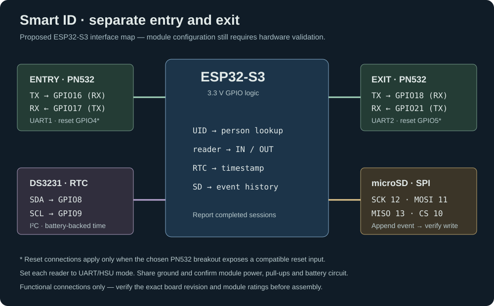

Capture direction
Separate entry and exit readers identify where a scan occurred. The system does not have to guess by alternating IN and OUT.
Smart ID entry–exit monitoring and time analytics for a laboratory, classroom or library. A proposed ESP32-S3 architecture combines two NFC readers, a battery-backed clock and offline storage to turn individual scans into useful presence records.
PROJECT 02 / VISUAL GUIDE
Component reference photographs from the supplied report, alongside a dedicated ESP32-S3 connection diagram. These show the proposed system’s parts, not a completed installation.



01 / THE PROBLEM
09:00 in. 12:00 out. 13:00 in. 17:00 out.
That is seven hours of recorded presence.
Subtracting the first entry from the last exit gives eight hours and includes a one-hour absence. An attendance design must reconstruct each valid visit, preserve the underlying events and handle the cases where a person forgets to scan.
The project extends basic RFID detection into a system design for daily, monthly and custom-range reporting. It also addresses two practical concerns: continuing to record during an internet outage and replacing a lost card without losing a person’s history.
Separate entry and exit readers identify where a scan occurred. The system does not have to guess by alternating IN and OUT.
Local timestamped records support recalculation, anomaly review and future reporting without rewriting history.
A permanent internal Person ID survives credential replacement, so old and new cards contribute to the same history.
02 / ARCHITECTURE
| Choice | Why it fits | What still needs attention |
|---|---|---|
| ESP32-S3 N16R8 | Wi-Fi, multiple UARTs, I²C and SPI in one microcontroller; the selected module provides 16 MB flash and 8 MB PSRAM. | Confirm the exact board variant and exposed GPIOs. |
| Two PN532 readers | Direction is tied to the reader location; each gets an independent hardware UART. | Test simultaneous polling, reader placement and field overlap. |
| NTAG213 cards | Low-cost 13.56 MHz NFC Type 2 tags with a seven-byte identifier. | UID checking does not provide strong authentication. |
| DS3231 RTC | Timestamps remain available without a network time service. | Set the correct time and detect lost backup power. |
| microSD / CSV | Readable, exportable records without a continuously available server. | A flushed file is not a guarantee against every sudden power failure. |
03 / PROPOSED CONNECTIONS
| Peripheral | Signals | ESP32-S3 GPIOs |
|---|---|---|
| Entry PN532 / UART 1 | Reader TX → RX; reader RX ← TX | RX 16 · TX 17 · reset 4, if exposed |
| Exit PN532 / UART 2 | Reader TX → RX; reader RX ← TX | RX 18 · TX 21 · reset 5, if exposed |
| DS3231 / I²C | SDA · SCL | 8 · 9 |
| microSD / SPI | SCK · MOSI · MISO · CS | 12 · 11 · 13 · 10 |
These are proposed assignments from the report, not a verified production wiring diagram. Select UART/HSU mode using the instructions for the specific PN532 breakout revision. Reader TX connects to the controller’s RX, and reader RX connects to TX.
The DS3231 specification of ±2 ppm over 0–40°C corresponds to approximately 0.173 seconds per day. This is a calculation from the component specification, not a measured accuracy claim for the assembled system. Firmware must still initialize the clock correctly and check its power-loss status.
04 / IDENTITY MODEL
A person is a long-lived entity; a card is a replaceable credential. The proposed database links one or more credentials to a permanent Person ID, so changing a card does not create a new attendance identity.
| Person ID | Credential | Status | New scans |
|---|---|---|---|
| P001 | C001 · original card | Revoked | Rejected after the device receives the update. |
| P001 | C002 · replacement card | Active | Accepted and linked to the same person. |
In a future multi-terminal deployment, revocation updates must reach every device. A disconnected terminal may have stale credential information; that requires an explicit synchronization and offline policy.
05 / EVENT MODEL
| File | Purpose |
|---|---|
PEOPLE.CSV | Permanent Person ID, display name and department. |
CARDS.CSV | Credential UID, Person ID and current credential status. |
EVENTS.CSV | Original timestamped scan history. |
DEVICES.CSV | Reader identity and direction. |
CONFIG.JSON | Configuration and reporting preferences. |
event_id,person_id,credential_id,timestamp,direction,status
E001,P001,C001,2026-11-16T09:00:00+05:30,IN,ACCEPTED
E002,P001,C001,2026-11-16T12:00:00+05:30,OUT,ACCEPTED
E003,P001,C001,2026-11-16T13:00:00+05:30,IN,ACCEPTED
E004,P001,C001,2026-11-16T17:00:00+05:30,OUT,ACCEPTEDEach event carries its person, credential, timestamp, direction and status. An explicit time-zone offset avoids ambiguity, while event identifiers must remain unique across restarts. Reports can then be recalculated without modifying the original records.
Check file opening and write results, flush and close the record, then signal success. An unavailable SD card should produce a recording error.
The final CSV record may still be interrupted by sudden power loss. Recovery tests, checksums and a durable journal belong in the next reliability stage.
Storage estimate: 500 users × 4 events/day × 300 days gives 600,000 events/year. At an assumed 150 bytes per event, that is about 90 MB of raw records, before filesystem overhead and backups. Reporting should process data in chunks instead of loading an entire history into controller RAM.
STORAGE / PLANNING
The report models 500 people making four scans per active day, over 300 days per year. At an assumed 150 bytes per event, the raw log grows by about 90 MB a year.
This estimate excludes filesystem overhead, backups, credentials and error logs. Storage capacity is only one design constraint: power interruption, incomplete writes and removable-media failure still need recovery procedures.
At the report’s ±2 ppm specification, the clock error corresponds to about ±0.173 seconds per day under the specified temperature conditions. Confirm the actual module against a time reference.
Only acknowledge a scan as saved after the write succeeds. If the clock or storage is unavailable, expose the failure and preserve any recoverable record for review.
06 / TIME ANALYTICS
For each person, process accepted events in chronological order. An IN opens a session; a valid later OUT closes it. Only completed, unambiguous sessions contribute to confirmed presence.
Reporting period: 16 November 2026 · Asia/Kolkata
| Time · Asia/Kolkata | Direction | Credential | Status |
|---|---|---|---|
| 16 Nov · 09:00 | IN | C001 | Accepted |
| 16 Nov · 12:00 | OUT | C001 | Accepted |
| 16 Nov · 13:00 | IN | C001 | Accepted |
| 16 Nov · 17:00 | OUT | C001 | Accepted |
09:00–12:00 contributes 3 hours; 13:00–17:00 contributes 4. The break is excluded.
A visit from 22:30 on 30 November to 01:15 on 1 December lasts 2 h 45 m. Clipping to each month assigns 1 h 30 m to November and 1 h 15 m to December. Daily and monthly totals use the same operation.
| Sequence | Interpretation | Reporting treatment |
|---|---|---|
| IN → OUT | A completed visit. | Count the overlap with the selected period. |
| IN → IN | Possible duplicate or missing exit. | Flag the ambiguity; do not fabricate an exit time. |
| OUT without an open IN | Orphan exit. | Flag it; do not invent a matching entry. |
| IN with no later OUT | Open session. | Keep visible for review; exclude from confirmed duration. |
| Revoked or unknown credential | Rejected scan. | Do not count it as attendance. |
Planned reports include completed visits, time present, days present and exception counts. “Average daily presence” must specify its denominator. Attendance percentage also needs a schedule and an institutional policy; card scans alone do not define it. Occupancy inferred from scans remains an estimate because a scan does not prove a person crossed the doorway.
07 / SOFTWARE DESIGN
TOOLS & SETUP
The C++ initialization sketch belongs on the ESP32-S3. Python runs the date-range example on a computer. JavaScript powers the browser’s attendance calculation.
| Software / component | Role in this project |
|---|---|
| Arduino IDE 2 + Arduino-ESP32 | Use the IDE with the esp32 board package by Espressif Systems, then select the profile matching your ESP32-S3 board. Official board-package setup ↗ |
| Adafruit PN532 + dependencies | Install Adafruit PN532 through Library Manager, including its prompted dependencies. The reference uses the hardware-UART constructor; confirm the installed library exposes that interface. Library documentation ↗ |
| Serial Monitor · 115200 baud | Displays ENTRY / EXIT reader ready or reader not found messages during initialization. |
| Python 3 | Runs attendance_date_range.py on the computer. It uses datetime from the standard library, so no pip packages are required. |
| Web browser / optional Node.js | The page already runs the JavaScript example in your browser. The standalone attendance_analytics.js file can also be loaded with require() in Node.js. |
| RTClib, Wire, SPI and SD · planned integration | The report proposes RTC timekeeping and SD event storage. Those features are not implemented by the downloadable initialization sketch. RTClib would provide DS3231 operations; Wire/SPI/SD would provide board interfaces and storage access. |
If compilation rejects the PN532 UART constructor or setPins(), check the installed PN532 library and Arduino-ESP32 core against the linked documentation. If a reader is not found, check its HSU mode, crossed TX/RX lines, common ground, power and reset wiring.
The firmware is responsible for reading devices and preserving events. Analytics operate on those stored events, so their calculations can be tested independently on a computer or in a browser.
The report uses the Adafruit PN532 library with two ESP32 hardware serial ports. The following excerpt shows interface initialization; it is not complete attendance firmware and has not been validated on the physical dual-reader assembly.
// Reference initialization only; physical integration is pending.
#include <Arduino.h>
#include <Adafruit_PN532.h>
// GPIO assignments
#define ENTRY_RX 16
#define ENTRY_TX 17
#define EXIT_RX 18
#define EXIT_TX 21
#define ENTRY_RST 4
#define EXIT_RST 5
// Independent UART peripherals
HardwareSerial entrySerial(1);
HardwareSerial exitSerial(2);
// Hardware UART PN532 interfaces
Adafruit_PN532 entryReader(ENTRY_RST, &entrySerial);
Adafruit_PN532 exitReader(EXIT_RST, &exitSerial);
void startReader(Adafruit_PN532 &reader, HardwareSerial &port,
int rx, int tx, const char *name) {
port.setPins(rx, tx); // reader.begin() opens the port at 115200
reader.begin();
if (!reader.getFirmwareVersion()) {
Serial.printf("%s reader not found\n", name);
return;
}
reader.SAMConfig();
Serial.printf("%s reader ready\n", name);
}
void setup() {
Serial.begin(115200);
startReader(entryReader, entrySerial, ENTRY_RX, ENTRY_TX, "ENTRY");
startReader(exitReader, exitSerial, EXIT_RX, EXIT_TX, "EXIT");
}
void loop() {
// Initialization reference only. Reader polling, RTC and SD logging are not implemented here.
}
An executable adaptation of report section 12.2. Run python attendance_date_range.py with Python 3.7 or newer. It uses only the standard library and prints November 1:30:00, December 1:15:00 and total 2:45:00.
"""Date-range example adapted from the Smart ID report, section 12.2.
Run: python attendance_date_range.py
Synthetic timestamps, not hardware measurements.
"""
from datetime import datetime, timedelta, timezone
# Fixed India Standard Time offset; no third-party packages required.
IST = timezone(timedelta(hours=5, minutes=30))
def timestamp(value):
parsed = datetime.fromisoformat(value)
return parsed.replace(tzinfo=IST) if parsed.tzinfo is None else parsed.astimezone(IST)
def time_in_range(entry, exit, start, end):
if exit <= entry:
raise ValueError("Invalid session")
if end <= start:
raise ValueError("Invalid reporting range")
overlap_start = max(entry, start)
overlap_end = min(exit, end)
return max(timedelta(0), overlap_end - overlap_start)
if __name__ == "__main__":
entry = timestamp("2026-11-30T22:30:00")
exit = timestamp("2026-12-01T01:15:00")
nov_start = timestamp("2026-11-01T00:00:00")
dec_start = timestamp("2026-12-01T00:00:00")
jan_start = timestamp("2027-01-01T00:00:00")
november = time_in_range(entry, exit, nov_start, dec_start)
december = time_in_range(entry, exit, dec_start, jan_start)
print("November:", november)
print("December:", december)
print("Total: ", november + december)
Save the downloaded file, open a terminal in its folder and run python attendance_date_range.py. On Windows, py attendance_date_range.py can be used when the Python launcher is installed.
The calculation function used by the interactive example above, available as a standalone file. Call analyzeAttendance(events, rangeStart, rangeEnd) with timestamped records containing time, person, direction (IN/OUT) and status (ACCEPTED for valid scans). Use ISO timestamps with an explicit timezone offset. Returns minutes, completed sessions, review flags and rejected scans. Flags and rejected counts cover all supplied records; durations are clipped to the selected period.
'use strict';
// This model processes illustrative records. It has no connection to RFID hardware.
function analyzeAttendance(events, rangeStart, rangeEnd) {
const start = Date.parse(rangeStart);
const end = Date.parse(rangeEnd);
if (!Number.isFinite(start) || !Number.isFinite(end) || end <= start) {
throw new RangeError('A reporting window must have a valid start and a later end.');
}
const open = new Map();
let milliseconds = 0;
let sessions = 0;
let flags = 0;
let rejected = 0;
const chronological = [...events].sort((a, b) => Date.parse(a.time) - Date.parse(b.time));
for (const event of chronological) {
if (event.status !== 'ACCEPTED') { rejected++; continue; }
const time = Date.parse(event.time);
if (!Number.isFinite(time) || !event.person) { flags++; continue; }
const previous = open.get(event.person);
if (event.direction === 'IN') {
if (previous) {
// A second IN makes the interval ambiguous; do not infer a missing exit.
previous.ambiguous = true;
flags++;
} else {
open.set(event.person, { time, ambiguous: false });
}
} else if (event.direction === 'OUT') {
if (!previous) { flags++; continue; }
if (time <= previous.time) {
flags++;
} else if (!previous.ambiguous) {
const overlap = Math.max(0, Math.min(time, end) - Math.max(previous.time, start));
if (overlap > 0) { milliseconds += overlap; sessions++; }
}
open.delete(event.person);
} else {
flags++;
}
}
flags += open.size;
return { minutes: milliseconds / 60000, sessions, flags, rejected };
}
if (typeof module !== "undefined") module.exports = { analyzeAttendance };
Try it: use the Multiple visits, Month boundary, Missing exit and Replaced card buttons in Try the logic. For a local calculation, load the downloaded JavaScript file in Node.js and pass ISO timestamps with timezone offsets. The result is calculated from supplied records, with no device or database connection.
The example on this page calculates completed-session durations from synthetic timestamps, clips them to a reporting window and excludes rejected credentials. It demonstrates the data-processing rules. It does not demonstrate RF performance, SD durability or a deployed device dashboard.
08 / ECONOMICS
The report estimates a low-cost two-reader prototype using a microcontroller and existing phone or laptop for reporting. The values below are planning figures from November 2026, not current supplier quotations.
| Component | Quantity | Estimated total |
|---|---|---|
| ESP32-S3 N16R8 | 1 | ₹600–850 |
| PN532 NFC readers | 2 | ₹540–1,200 |
| DS3231 RTC | 1 | ₹165–350 |
| microSD adapter + card | 1 + 1 | ₹250–550 |
| NFC test cards | Small test batch | ₹250–600 |
| Regulated power supply | 1 | ₹150–300 |
| Wiring, prototype PCB and enclosure | Set | ₹300–900 |
| Component subtotal | ₹2,255–4,750 |
The rounded planning range is ₹2,300–4,800. Optional display, UPS, shipping variation and software-development labour are excluded. Final procurement must confirm the card chip, module revision, supply requirements and backup-cell arrangement.
The replacement estimate is a cost-model example, not an observed loss rate or purchasing commitment.
09 / VALIDATION & NEXT STEPS
The source report distinguishes documented hardware capabilities, example calculations and pending physical tests. That distinction remains visible here: a sound architecture is not yet evidence of a reliable installed system.
| Area | Current evidence | Next validation step |
|---|---|---|
| Multiple visits and range clipping | Worked examples in the report; interactive sample-data model on this page. | Compare outputs with known session totals and reporting boundaries. |
| Dual-reader operation | Proposed UART wiring and initialization pattern. | Verify both readers, concurrent scan handling and placement. |
| Clock and storage | Documented DS3231 and microSD interfaces. | Check RTC initialization, clock backup and every event write. |
| Credential lifecycle | Person/credential schema and revocation flow. | Test registration, replacement, restart and offline updates. |
| Missing / repeated scans | Explicit state and exception policy. | Exercise ambiguous sequences and duplicate suppression. |
| Recovery | Failure cases identified. | Interrupt power during writes; inspect partial records and retained history. |
| Device dashboard | Reporting architecture proposed. | Connect actual event data, date filters, export and access controls. |
Later work includes authenticated smart cards, a durable event journal, multi-terminal synchronization and passage sensors. Attendance records also need controlled access and a retention policy before any real deployment.
10 / DOCUMENTATION
25 pages · PDF · Version 2.0 · 16 November 2026 · Architecture, algorithms and validation plan.
Smart ID Entry–Exit & Time Analytics · Open PDF in a new tab · Download PDF. The direct links also work if your browser cannot display an embedded PDF.
Manufacturer documentation and library references cited in the report.